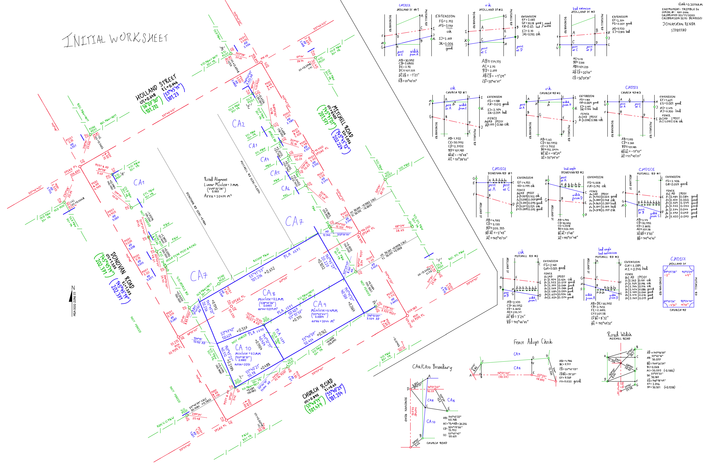
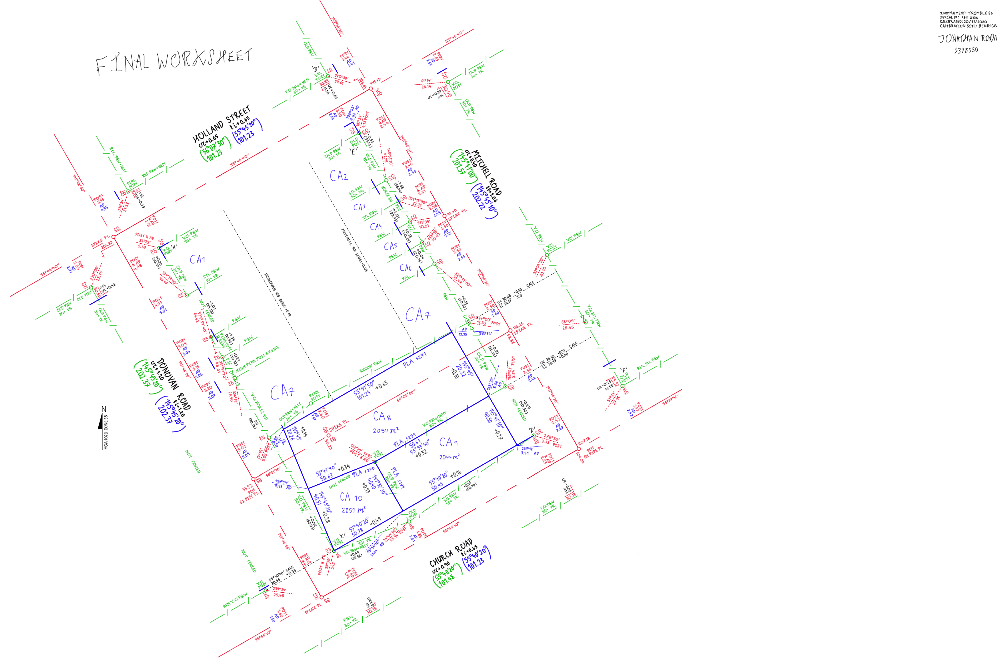

Boundary Re-establishment 2 ~ Worksheet
 This was the second Boundary Re-establishment project I did, not long after the first also in the second semester of my third year. Like the first, there was still a lot of information to track, but with some practice I was able to simplify the process for myself a lot better. This time I only used two sheets, and the color-coding & side calculations are set up better. I even made use of a line drawing extension to the drawing app I used to create conventionally-styled lines for each type (eg. slashed lines for fences). I was also able to do without the extensive lettering system I previously used, saving a lot of time without becoming disorganized.